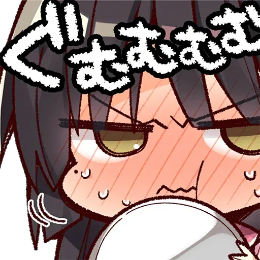

星光咖啡店與死神之蝶：爲死神賣命的搞笑日常
作者：桐遠暮羽
玩太多沉痛的 Galgame，大腦要降級啦。今天玩點輕鬆愉快的，歡迎來到死神咖啡店！

苦逼的處男大學生，走在街上慘遭泥頭車創死了。然後就被死神拉去了自家咖啡店強制打工，結果發現咖啡店裏除了死神還有人外。
| 資訊一覽 | |
|---|---|
| 作品名稱 | 喫茶ステラと死神の蝶 |
| 開發商 | 柚子社 |
| 遊戲時長 | 30 小時 |
| 類型 | 戀愛 搞笑 |
| 難度 | 低（使用路線圖直接跳轉） |
| 分級 | R-18（性行爲） |
什麼，故事？柚子社的遊戲也要看故事？
故事
男主角高嶺昂晴，本來只是個普通大學生，還是處男。
他還沒破處就死了，被泥頭車給創的，當時簡直遺憾得要命，，，
結果他醒來的時候，發現時間倒回了當天早上，
而且發生的事情一模一樣，太哈人了！接下來豈不是又要死了，
然後路上被一隻會講話的貓帶走，見到了死神。
「你還沒有逃脫死亡的命運。」死神恐嚇道。
「要是想活命，就到我的咖啡店來打工。」死神強迫道。
昂晴就在咖啡店展開了打工生活，並且遇到了各種各樣的女孩子。
那麼他最後有沒有逃脫死亡的命運呢❓️
登場人物
人物插畫
遊戲 OP 動畫欣賞
都是萌萌人，，，
遊戲畫面
一句話點評
引用一下 PARQUET 文章中的點評：
这里指的俱全是，本作拥有柚子社传统废萌的基本结构：
第一步分别和女角色相识，
第二步由于某个原因和作品里的女角色们聚集到一起
第三步男主和女角色团一起解决一个重大的事件
第四步在事件结束后进入个人线路。
柚子社，典中典。很久以前俺就聽朋友經常提起某某社，什麼廢萌啦，劇情白開水啦，
當然俺都沒有聽進去，直到俺有一天隨便找遊戲玩，陰差陽錯看到了上面那張男主角
枕在死神膝蓋上的 CG，於是就把種子下了下來。
遊戲一開始，驚豔到俺的是精緻的畫面和很可愛，很有辨識性的畫風。
劇情就和上面說的廢萌四步曲一樣，就是在一個奇妙設定裏的戀愛日常。
即使是日常，但是穿插的搞笑橋段還是令人忍俊不繃，而且柚子社還很有特色地在
具體故事情節發生的時候，恰當地使用 Q 版作畫將現場的情況描繪出來，
這種方式很好地解決了光是利用立繪難以表現的現場狀況的問題，
要知道俺之前玩的 Galgame 遇上這種情況只能望向天空或者街道。
另外，喜歡戀愛故事的人應該會很喜歡這種風格，前期混臉熟的時候腳踏實地，
利用各種事件來刷各個女主角的好感度，
之後再發生的表白和初體驗事件就水到渠成，而且笨拙的兩人導致的節目效果也很有趣。
——歡迎來到輕鬆愉快的柚子社死神咖啡廳。
在猶豫是否要下載？
這裏有一個 8 分鐘的試玩實況。
本作的畫面非常精細所以我特別錄製了高清畫質，，，
劇情大意是青梅竹馬來叫你起床，順便煮早餐。
資源與下載
Hikari Field 要在 Steam 上代理這個遊戲，，，如果有什麼新消息我還會來這裏更新的。
盜版：
遊戲本體（無需破解）
1 | |
文件名：[191220] [ゆずソフト] 喫茶ステラと死神の蝶 + Character Songs + Tokuten CD + Bonus + Update 1.1
該種子來自 Anime Sharing 論壇： 🔗️點此查看
遊戲有升級補丁，記得下載最新的來安裝。🔗️點此前往官網 下載可能要翻牆。
如果想玩中文 請配合這個漢化補丁使用 🔗️前往 Telegram 頻道
這遊戲還出了不少週邊，小動畫，小漫畫，還有貼紙，，，

对于原创内容，文章作者保留所有权利。转载需要许可，如有需要请前往 🔗️Galgame 频道 留言。
另外，复制链接自由，请随意分享。